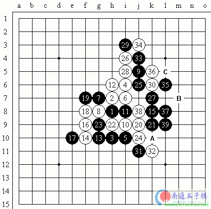

第六届世界连珠团体锦标赛季军争夺战中吴昊 vs Konstantin Nikonov
#1 第六届世界连珠团体锦标赛季军争夺战中吴昊 vs Konstantin Nikonov 作者：有志青年 发表时间：2006-5-5 8:43:48

数日比赛，吴昊坐镇第二台，令人放心的发挥，稳健的棋风和精深的计算，成为中国队冲击季军的保障，下面我们就来欣赏一下吴昊精彩的一局。
实战吴昊持黑先行，走到黑11是一个常见的定式，从白棋12的走法上看，俄罗斯选手是很喜欢走这个点的变化，黑棋13没有走常见的点，而是选择活三的变化，而我看到这里想起五子棋爱好者邹入志(网名叫折枝客)，因为这个13的变化就是他比较早的走出来的， 以后的变化可以看出白棋对黑棋13活三的走法是缺乏准备的，白14是唯一的防守点，黑棋15点是黑13手后连贯的好点，白棋18手活三，这是Konstantin Nikonov采用了将局势看得清楚的一种下法，其实白棋18可以更为积极的下在黑棋19位，使局面更富有变化。白棋20强防，黑棋21是控制局面的好点，白棋的22和24手也是使局面看得清楚下法，此时的棋盘应该是黑棋很主动的局面。黑棋25是稳健的下法，白棋26败招！此时大概只能于27位的防守，而这将是一盘未知结果的棋局。我想大概是被黑13活三后，变化上白棋一直比较被动，Konstantin Nikonov心情上想及早摆脱出来，所以下了26过分的强手。黑棋27活三好手！白棋为了防杀不得已只得28冲后在防30位，黑棋31妙手！通过31点的做棋，黑棋将右边到下面的棋势都联系在了一起，估计是对手没有发觉像31这样的好点，只是算清楚了黑棋如果直接去杀，是胜不了的。32的防守已经很难选择了，即使防守在A点，黑棋依旧追胜，黑棋35跳活三好手！白棋36很想防在B点，但黑棋有C点的绝杀。所以白棋不能防守在B点，当看到黑棋39手后产生的连杀，白棋停钟认负。
小知识：
认识做棋：做棋，不同于做杀，它其实是一步扩大自己优势的一步棋，使自己的棋更具有连接性，那种单纯的追求冲四、活三的进攻，往往是不能取胜。
#2 Re:第六届世界连珠团体锦标赛季军争夺战中吴昊 vs Konstantin Nikonov 作者：送分 发表时间：2006-5-12 21:47:33
这个是殷立诚解说的吧。